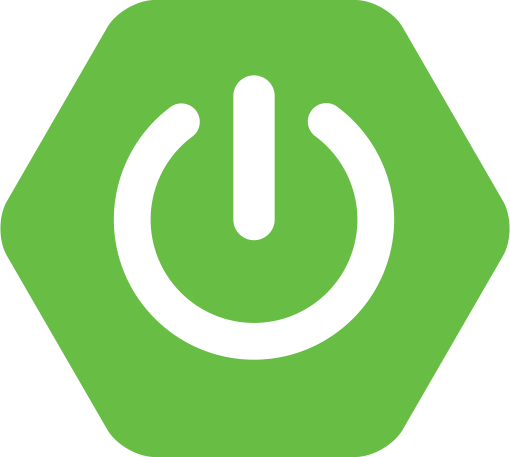
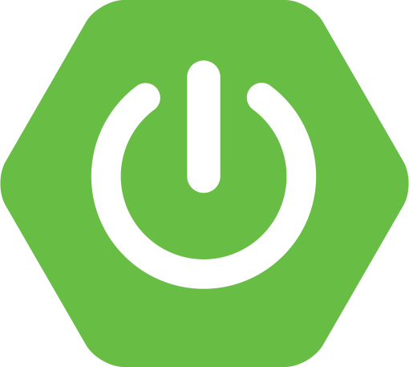

Servicios Especializados
Soluciones tecnológicas adaptadas a las necesidades de su negocio

 

Desarrollo Java Enterprise
Aplicaciones empresariales robustas utilizando Java EE, EJB, JPA, Web Services y JSF. Sistemas escalables diseñados para soportar el crecimiento de su negocio.
Sistemas Financieros
Experiencia en banca digital, sistemas contables, puestos de bolsa y fondos de inversión. Automatización de procesos financieros complejos.
Integración de Sistemas
Conexión e integración entre diferentes aplicaciones y procesos tecnológicos. Soluciones que permiten la comunicación efectiva entre sus sistemas.
Bases de Datos
Diseño y optimización de bases de datos PostgreSQL, Oracle, DB2 y SQL Server. Creación de consultas eficientes para reportes críticos del negocio.
Desarrollo Web
Creación de interfaces de usuario modernas con HTML5, JSF, PrimeFaces.
Gestión de Proyectos Ágiles
Scrum Master certificado. Implementación de metodologías ágiles para asegurar el éxito de su proyecto.